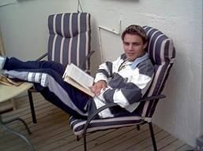

Tarpeena Tales 7
The so called silly season has come and gone but I reckon it’s only silly if you don’t enjoy the festivity and the extra company that arrives at that time.
The family came and the boys seemed to enjoy knocking me off of the “King o’Darts” perch that I had made for myself.
Mind you it took some good darts to do that and the king of it all was John’s 106 pegout. Triple19, triple7 double 14.
Triple19, triple7 double 14.
See picture at right.
Tony too had his moments but no photos of that though there is a photo of Tony chilling out. 

John Davies paid a quick visit over Christmas during which he beat us all comfortably at 501, but when it came down to Round the Clock then our John proved the champ.
Olivia meanwhile seemed to take a quiet delight in beating both John and me in scrabble. Just where the two letter words come from is any one’s guess but the real killer was the relentless way she took out the triple word opportunities.
Eight ball was a blur but I don’t think I won too many games. I know I had too many ales. Euchre 500 was also part of the Christmas day tournament and proved a close fought affair with the John/Tony combination determined to have an Irish victory by going out the back door rather than letting the J.D./Dad combination go out the front. This was memorable by Tony getting a Lay down Misere` worth 500 points which let them get back into the black - temporarily. One often hears of that term but rarely sees it happening.
Nuran of course cooked up a treat and the Yorkshire Puddings were exceptional. The Turkey became just a memory with no left overs and no photos of the feast either but here is a link to the
The cellar was depleted by the time they had all left and it seemed strange to have a house full in the morning and just we two in the evening. They all arrived back home safely which meant we could go to bed in peace. No matter how old they are- parents worry about their kids.
Every now and then you hear of a good thought and the latest was from Michael Caine of all people. He was celebrating the fact that he was getting older as he reckoned the alternative was worse!
He reckoned too many people look upon life as a rehearsal for another play when he thinks you would enjoy it more if you thought that this mortal coil WAS the main play. True some of us have it rough but hoping for something better stops you from getting to something better. Well I agree and I’m having fun while I can so there!
The cross lotto ticket in the Super Duper Mega Draw proved no good but that was no surprise as we have a 100% failure rate on those.
Don and Liz Mathys came over to celebrate the arrival of the New Year and joined with us in a singular lack of success at Cross Lotto. Still the evening was lovely and mild and we could celebrate together the arrival of the year in which we four will end up being Grand Parents , all being well. Their daughter Karyn is due in February sometime and Olivia in March.
Happy days.
Nuran and I are busy preparing for our cruise to Canberra to see Jim and Angela.
I have pored over the maps to ensure only one or two wrong turns are taken on the way. Nuran has made a check list of things to leave behind, it is shorter than the things she will take. Happy days.
Well enjoy the main play and smile, it IS only a comedy you know and someone up there is laughing at US.